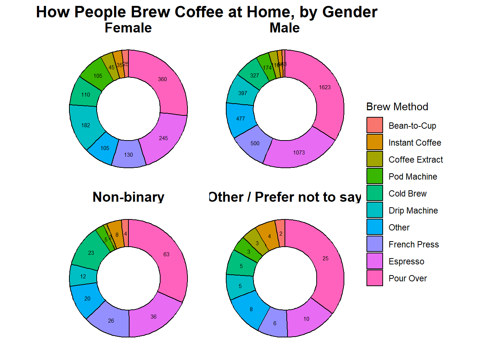
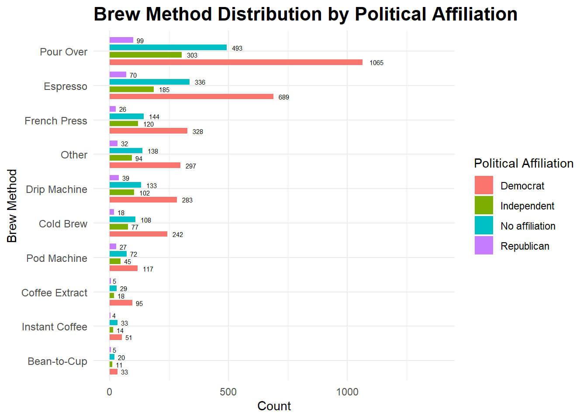
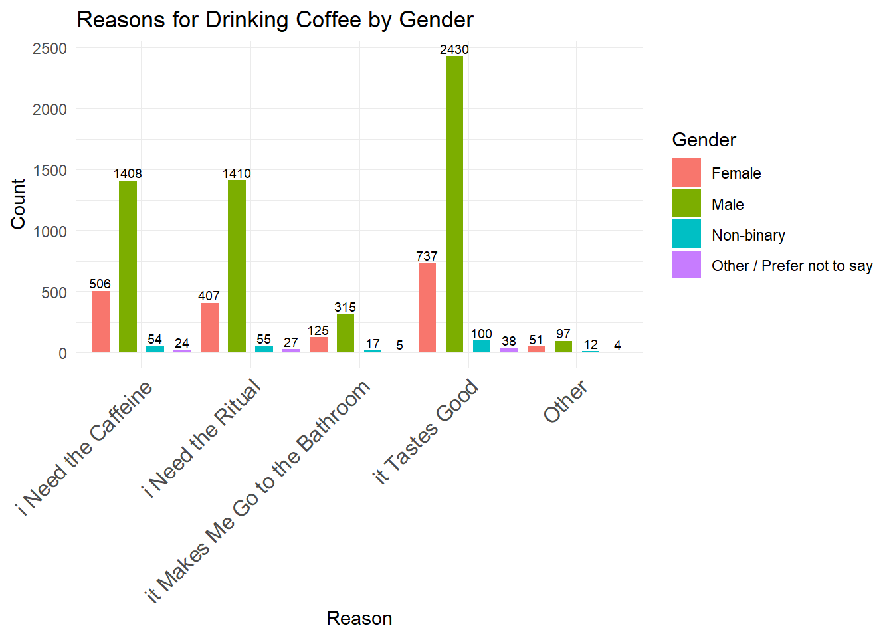

Code
library(tidyverse)
library(dplyr)
library(tidyr)
library(stringr)
library(forcats)
library(ggplot2)
library(readr)
library(janitor)
library(tools)
library(gt)As busy and tired scientist, many of us rely on coffee as a lifeline to get us through those long experiment or writing days. A data set that surveyed ~4,000 individuals, looked at how different demographics (such as age, gender, political affiliation, ect.) feel about different aspects of coffee (like additives, dairy preference, brew method, ect.). I wanted to use this final as a way to practice organizing the data, using different plotting methods, and some stats. Enjoy!

library(tidyverse)
library(dplyr)
library(tidyr)
library(stringr)
library(forcats)
library(ggplot2)
library(readr)
library(janitor)
library(tools)
library(gt)#load in the data
data <- "C:/AbbiMorgan_IntroR/AbbiMorgan_IntroR/data"
# Get all CSVs in that folder
csv_files <- list.files(path = data, pattern = "\\.csv$", full.names = TRUE)
# Load coffee.csv specifically
coffee <- read_csv(file.path(data, "coffee.csv"))
# Clean names
df_clean <- coffee %>% clean_names()
df_clean <- df_clean %>%
mutate(
gender = case_when(
gender %in% c("Other (please specify)", "Prefer not to say") ~ "Other / Prefer not to say",
TRUE ~ gender
)
)# DETECT CHECKBOX COLUMNS (TRUE/FALSE or 0/1)
checkbox_cols <- names(df_clean)[sapply(df_clean, function(x) is.logical(x) || all(x %in% c(0,1,NA)))]
# EXTRACT PARENT QUESTIONS
parent_questions <- checkbox_cols %>%
str_replace("_$", "") %>% # remove trailing underscore
str_replace("_[^_]+$", "") %>% # remove last segment (option)
unique()
# CREATE HUMAN-READABLE LABELS
make_readable <- function(x) {
x %>%
str_replace_all("_", " ") %>%
str_trim() %>%
toTitleCase()
}
question_labels <- setNames(
make_readable(parent_questions),
parent_questions
)
checkbox_parent_summary_grouped <- function(df, checkbox_cols, label_dict) {
df %>%
select(submission_id, gender, what_is_your_age, political_affiliation, all_of(checkbox_cols)) %>%
pivot_longer(
cols = all_of(checkbox_cols),
names_to = "full_question",
values_to = "selected"
) %>%
filter(selected == TRUE) %>%
mutate(
parent_raw = str_replace(full_question, "_[^_]+$", ""),
method_raw = str_extract(full_question, "[^_]+$"),
Question = label_dict[parent_raw],
Method = make_readable(method_raw)
) %>%
group_by(
Question,
Method,
gender,
political_affiliation
) %>%
summarize(
n = n(),
.groups = "drop"
) %>%
arrange(Question, Method, gender)
}final_summary <- checkbox_parent_summary_grouped(
df_clean,
checkbox_cols,
question_labels
)
final_summary #tibble of organized data# A tibble: 754 × 5
Question Method gender political_affiliation n
<chr> <chr> <chr> <chr> <int>
1 Do you Usually Add Anything to you… Other Female Democrat 6
2 Do you Usually Add Anything to you… Other Female Independent 1
3 Do you Usually Add Anything to you… Other Female No affiliation 6
4 Do you Usually Add Anything to you… Other Female <NA> 2
5 Do you Usually Add Anything to you… Other Male Democrat 3
6 Do you Usually Add Anything to you… Other Male Independent 7
7 Do you Usually Add Anything to you… Other Male No affiliation 9
8 Do you Usually Add Anything to you… Other Male Republican 1
9 Do you Usually Add Anything to you… Other Non-b… Democrat 1
10 Do you Usually Add Anything to you… Other Non-b… Independent 1
# ℹ 744 more rowsfinal_summary %>% # Visualize the data and put into a table
head(10) %>%
gt() %>%
tab_header(
title = "Coffee Preparation Methods by Demographics",
subtitle = "Counts grouped by Question, Method, Gender, Age, and Political Affiliation"
) %>%
cols_label(
Question = "Question",
Method = "Method",
gender = "Gender",
political_affiliation = "Political Affiliation",
n = "Count"
) %>%
fmt_number(
columns = n,
decimals = 0
) %>%
tab_options(
table.font.size = 14,
heading.align = "center"
)| Coffee Preparation Methods by Demographics | ||||
| Counts grouped by Question, Method, Gender, Age, and Political Affiliation | ||||
| Question | Method | Gender | Political Affiliation | Count |
|---|---|---|---|---|
| Do you Usually Add Anything to your Coffee | Other | Female | Democrat | 6 |
| Do you Usually Add Anything to your Coffee | Other | Female | Independent | 1 |
| Do you Usually Add Anything to your Coffee | Other | Female | No affiliation | 6 |
| Do you Usually Add Anything to your Coffee | Other | Female | NA | 2 |
| Do you Usually Add Anything to your Coffee | Other | Male | Democrat | 3 |
| Do you Usually Add Anything to your Coffee | Other | Male | Independent | 7 |
| Do you Usually Add Anything to your Coffee | Other | Male | No affiliation | 9 |
| Do you Usually Add Anything to your Coffee | Other | Male | Republican | 1 |
| Do you Usually Add Anything to your Coffee | Other | Non-binary | Democrat | 1 |
| Do you Usually Add Anything to your Coffee | Other | Non-binary | Independent | 1 |
# Exclude parent question
brew_cols <- grep("^how_do_you_brew_coffee_at_home_", names(df_clean), value = TRUE)
# #Shorten brew method names
shorten_method <- function(x) {
x %>%
str_remove("^how_do_you_brew_coffee_at_home_") %>%
case_match(
"pour_over" ~ "Pour Over",
"french_press" ~ "French Press",
"espresso" ~ "Espresso",
"coffee_brewing_machine_e_g_mr_coffee" ~ "Drip Machine",
"pod_capsule_machine_e_g_keurig_nespresso" ~ "Pod Machine",
"instant_coffee" ~ "Instant Coffee",
"bean_to_cup_machine" ~ "Bean-to-Cup",
"cold_brew" ~ "Cold Brew",
"coffee_extract_e_g_cometeer" ~ "Coffee Extract",
"other" ~ "Other",
.default = x %>% str_replace_all("_", " ") %>% tools::toTitleCase()
)
}
## Brew method by gender (shortened names + popularity ordering)
brew_by_gender <- df_clean %>%
pivot_longer(
cols = all_of(brew_cols),
names_to = "brew_method",
values_to = "selected"
) %>%
filter(selected == TRUE) %>%
drop_na(gender) %>%
count(gender, brew_method, sort = TRUE) %>%
mutate(method = shorten_method(brew_method)) %>%
group_by(method) %>%
mutate(total_method_n = sum(n)) %>%
ungroup() %>%
mutate(method = fct_reorder(method, total_method_n))
# Donut data
brew_donut <- brew_by_gender %>%
group_by(gender) %>%
mutate(percent = n / sum(n) * 100)
# Donut plot
p_gender_brew_donut <- ggplot(brew_donut, aes(x = 2, y = percent, fill = method)) +
geom_col(color = "black") +
geom_text(
aes(label = n),
position = position_stack(vjust = 0.5),
size = 2
) +
coord_polar(theta = "y") +
facet_wrap(~ gender) +
xlim(0.5, 2.5) + # creates donut hole
theme_void() +
labs(
title = "How People Brew Coffee at Home, by Gender",
fill = "Brew Method"
) +
theme(
strip.text = element_text(size = 14, face = "bold"),
plot.title = element_text(size = 16, face = "bold", hjust = 0.5),
legend.position = "right"
)
print(p_gender_brew_donut)
brew_pol <- df_clean %>%
pivot_longer(
cols = all_of(brew_cols),
names_to = "brew_method",
values_to = "selected"
) %>%
filter(selected == TRUE) %>%
drop_na(political_affiliation) %>%
count(political_affiliation, brew_method, sort = TRUE) %>%
mutate(method = shorten_method(brew_method)) %>%
group_by(method) %>%
mutate(total_method_n = sum(n)) %>%
ungroup() %>%
mutate(method = fct_reorder(method, total_method_n))
# Plot
p_pol_brew <- ggplot(brew_pol, aes(x = n, y = method, fill = political_affiliation)) +
geom_col(position = position_dodge(width = 0.85), width = 0.65) +
geom_text(
aes(label = n),
position = position_dodge(width = 0.85),
hjust = -.5,
size = 2
) +
theme_minimal() +
labs(
title = "Brew Method Distribution by Political Affiliation",
x = "Count",
y = "Brew Method",
fill = "Political Affiliation"
) +
theme(
axis.text.y = element_text(size = 9),
plot.title = element_text(size = 16, face = "bold"),
legend.position = "right"
) +
xlim(0, max(brew_pol$n) * 1.30)
print(p_pol_brew)
# Cleaned and shortened names
why_cols <- c(
"why_do_you_drink_coffee_it_tastes_good",
"why_do_you_drink_coffee_i_need_the_caffeine",
"why_do_you_drink_coffee_i_need_the_ritual",
"why_do_you_drink_coffee_it_makes_me_go_to_the_bathroom",
"why_do_you_drink_coffee_other"
)
gender_why <- df_clean %>%
pivot_longer(
cols = all_of(why_cols),
names_to = "reason_raw",
values_to = "selected"
) %>%
filter(selected == TRUE) %>%
drop_na(gender) %>%
mutate(
reason = reason_raw %>%
str_remove("^why_do_you_drink_coffee_") %>%
str_replace_all("_", " ") %>%
tools::toTitleCase()
)
why_summary <- gender_why %>%
count(gender, reason) %>%
group_by(gender) %>%
mutate(percent = round(n / sum(n) * 100, 1)) %>%
ungroup()
p_gender_why <- ggplot(why_summary, aes(x = reason, y = n, fill = gender)) +
geom_col(position = position_dodge(width = 1), width = 0.65) +
geom_text(
aes(label = n),
position = position_dodge(width = 1),
vjust = -0.3,
size = 2.5
) +
theme_minimal() +
labs(
title = "Reasons for Drinking Coffee by Gender",
x = "Reason",
y = "Count",
fill = "Gender"
) +
theme(
axis.text.x = element_text(angle = 45, hjust = 1, size = 12)
)
print(p_gender_why)
Summarize your findings and their implications.
Tidy Tuesday Repo (https://github.com/rfordatascience/tidytuesday)
Robet McKeon Aloe “Great American Coffee Taste Test Breakdown” (https://rmckeon.medium.com/great-american-coffee-taste-test-breakdown-7f3fdcc3c41d)
Last updated: July 2026